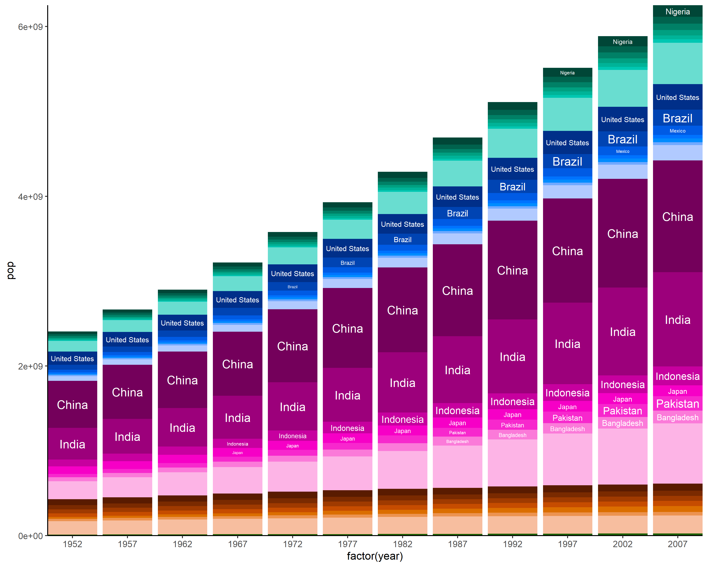
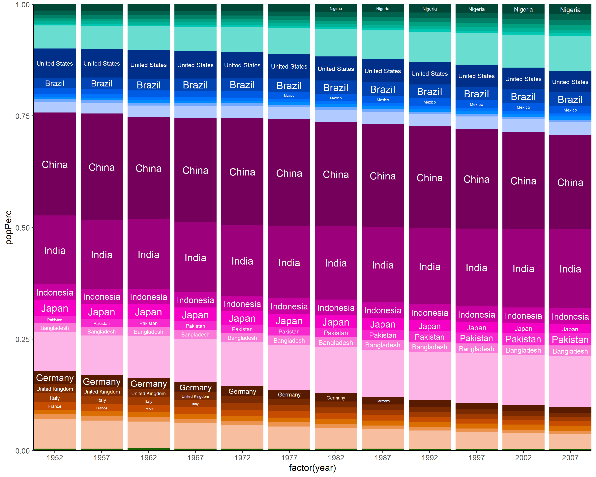
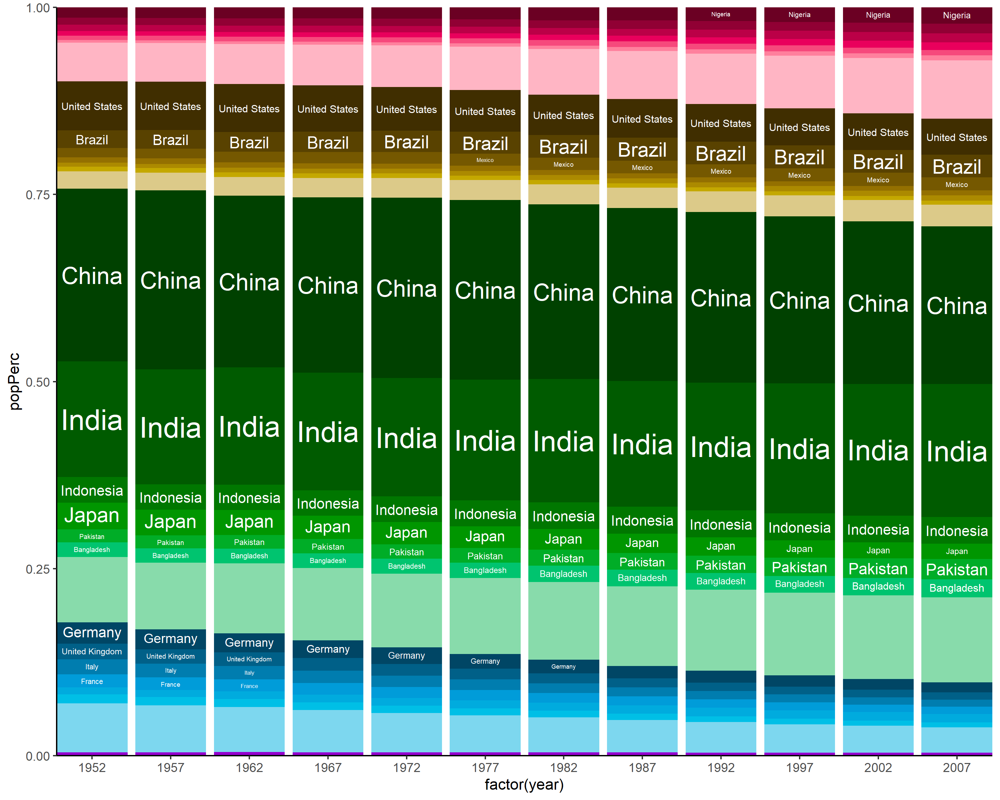

hueR lets you create colour palettes based on two variables: variable a defining the hue, and variable b defining the shades of that hue.
This is intended for grouped categorical data, where values of b represent subcategories of the values of a.
Installation
You can install the latest development version of hueR with:
devtools::install_github("david-barnett/hueR")Example
library(hueR)
library(dplyr)
#>
#> Attaching package: 'dplyr'
#> The following objects are masked from 'package:stats':
#>
#> filter, lag
#> The following objects are masked from 'package:base':
#>
#> intersect, setdiff, setequal, union
library(ggplot2)
# sort countries, within continents, by average population
sortedSummary <- gapminder::gapminder %>%
group_by(continent, country) %>%
summarise(AvPop = mean(pop, na.rm = TRUE), .groups = "keep") %>%
group_by(continent) %>%
arrange(.by_group = TRUE, desc(AvPop))
# create palettes
countryPal7 <- sortedSummary %>%
hueGroupPal(group = "continent", shade = "country", maxShades = 7)
# plot population per year
gapminder::gapminder %>%
ggplot(aes(
x = factor(year), y = pop,
# setting as factor with levels in correct order ensures ordering of bars
fill = factor(country, levels = names(countryPal7))
)) +
geom_col() +
guides(fill = "none") +
# setting manual scale of course sets correct colours
scale_fill_manual(values = countryPal7) +
ggfittext::geom_fit_text(
aes(ymin = 0, ymax = pop, label = country),
position = "stack", colour = "white"
) +
theme_classic() +
coord_cartesian(expand = FALSE)
# plot population per year as share of world total that year
gapminder::gapminder %>%
group_by(year) %>%
mutate(popPerc = pop/sum(pop, na.rm = TRUE)) %>%
ggplot(aes(
x = factor(year), y = popPerc,
# setting as factor with levels in correct order ensures ordering of bars
fill = factor(country, levels = names(countryPal7))
)) +
geom_col() +
guides(fill = "none") +
# setting manual scale of course sets correct colours
scale_fill_manual(values = countryPal7) +
ggfittext::geom_fit_text(
aes(ymin = 0, ymax = popPerc, label = country),
position = "stack", colour = "white"
) +
theme_classic() +
coord_cartesian(expand = FALSE)
# plot with modified palette
countryPal7alt <- sortedSummary %>%
hueGroupPal(group = "continent", shade = "country", maxShades = 7,
hues = hueSet(start = 0))
gapminder::gapminder %>%
group_by(year) %>%
mutate(popPerc = pop/sum(pop, na.rm = TRUE)) %>%
ggplot(aes(
x = factor(year), y = popPerc,
# setting as factor with levels in correct order ensures ordering of bars
fill = factor(country, levels = names(countryPal7alt))
)) +
geom_col() +
guides(fill = "none") +
# setting manual scale of course sets correct colours
scale_fill_manual(values = countryPal7alt) +
ggfittext::geom_fit_text(grow = TRUE,
aes(ymin = 0, ymax = popPerc, label = country),
position = "stack", colour = "white"
) +
theme_classic() +
coord_cartesian(expand = FALSE)
Session info
devtools::session_info()
#> - Session info ---------------------------------------------------------------
#> setting value
#> version R version 4.1.1 (2021-08-10)
#> os Windows 10 x64
#> system x86_64, mingw32
#> ui RTerm
#> language (EN)
#> collate English_United States.1252
#> ctype English_United States.1252
#> tz Europe/Berlin
#> date 2021-09-27
#>
#> - Packages -------------------------------------------------------------------
#> package * version date lib source
#> assertthat 0.2.1 2019-03-21 [1] CRAN (R 4.0.0)
#> cachem 1.0.6 2021-08-19 [1] CRAN (R 4.1.1)
#> callr 3.7.0 2021-04-20 [1] CRAN (R 4.1.1)
#> cli 3.0.1 2021-07-17 [1] CRAN (R 4.1.0)
#> colorspace 2.0-2 2021-06-24 [1] CRAN (R 4.0.5)
#> crayon 1.4.1 2021-02-08 [1] CRAN (R 4.0.4)
#> DBI 1.1.1 2021-01-15 [1] CRAN (R 4.0.3)
#> desc 1.3.0 2021-03-05 [1] CRAN (R 4.0.4)
#> devtools 2.4.2 2021-06-07 [1] CRAN (R 4.1.1)
#> digest 0.6.27 2020-10-24 [1] CRAN (R 4.0.3)
#> dplyr * 1.0.7 2021-06-18 [1] CRAN (R 4.0.5)
#> ellipsis 0.3.2 2021-04-29 [1] CRAN (R 4.0.5)
#> evaluate 0.14 2019-05-28 [1] CRAN (R 4.0.0)
#> fansi 0.5.0 2021-05-25 [1] CRAN (R 4.0.5)
#> farver 2.1.0 2021-02-28 [1] CRAN (R 4.0.4)
#> fastmap 1.1.0 2021-01-25 [1] CRAN (R 4.0.3)
#> fs 1.5.0 2020-07-31 [1] CRAN (R 4.0.2)
#> gapminder 0.3.0 2017-10-31 [1] CRAN (R 4.0.2)
#> generics 0.1.0 2020-10-31 [1] CRAN (R 4.0.3)
#> ggfittext 0.9.1 2021-01-30 [1] CRAN (R 4.1.1)
#> ggplot2 * 3.3.5 2021-06-25 [1] CRAN (R 4.0.5)
#> glue 1.4.2 2020-08-27 [1] CRAN (R 4.0.2)
#> gtable 0.3.0 2019-03-25 [1] CRAN (R 4.0.0)
#> highr 0.9 2021-04-16 [1] CRAN (R 4.1.1)
#> htmltools 0.5.2 2021-08-25 [1] CRAN (R 4.1.1)
#> hueR * 0.0.0.9000 2021-09-27 [1] local
#> knitr 1.34 2021-09-09 [1] CRAN (R 4.1.1)
#> labeling 0.4.2 2020-10-20 [1] CRAN (R 4.0.3)
#> lifecycle 1.0.1 2021-09-24 [1] CRAN (R 4.1.1)
#> magrittr 2.0.1 2020-11-17 [1] CRAN (R 4.0.3)
#> memoise 2.0.0 2021-01-26 [1] CRAN (R 4.1.1)
#> munsell 0.5.0 2018-06-12 [1] CRAN (R 4.0.0)
#> pillar 1.6.3 2021-09-26 [1] CRAN (R 4.1.1)
#> pkgbuild 1.2.0 2020-12-15 [1] CRAN (R 4.0.3)
#> pkgconfig 2.0.3 2019-09-22 [1] CRAN (R 4.0.0)
#> pkgload 1.2.2 2021-09-11 [1] CRAN (R 4.1.1)
#> prettyunits 1.1.1 2020-01-24 [1] CRAN (R 4.0.0)
#> processx 3.5.2 2021-04-30 [1] CRAN (R 4.1.1)
#> ps 1.6.0 2021-02-28 [1] CRAN (R 4.0.4)
#> purrr 0.3.4 2020-04-17 [1] CRAN (R 4.0.0)
#> R6 2.5.1 2021-08-19 [1] CRAN (R 4.0.5)
#> remotes 2.4.0 2021-06-02 [1] CRAN (R 4.1.1)
#> rlang 0.4.11 2021-04-30 [1] CRAN (R 4.0.5)
#> rmarkdown 2.11 2021-09-14 [1] CRAN (R 4.1.1)
#> rprojroot 2.0.2 2020-11-15 [1] CRAN (R 4.0.3)
#> rstudioapi 0.13 2020-11-12 [1] CRAN (R 4.0.3)
#> scales 1.1.1 2020-05-11 [1] CRAN (R 4.0.0)
#> sessioninfo 1.1.1 2018-11-05 [1] CRAN (R 4.0.0)
#> stringi 1.7.4 2021-08-25 [1] CRAN (R 4.1.1)
#> stringr 1.4.0 2019-02-10 [1] CRAN (R 4.0.0)
#> testthat 3.0.4 2021-07-01 [1] CRAN (R 4.0.5)
#> tibble 3.1.4 2021-08-25 [1] CRAN (R 4.1.1)
#> tidyselect 1.1.1 2021-04-30 [1] CRAN (R 4.0.5)
#> usethis 2.0.1 2021-02-10 [1] CRAN (R 4.0.4)
#> utf8 1.2.2 2021-07-24 [1] CRAN (R 4.1.1)
#> vctrs 0.3.8 2021-04-29 [1] CRAN (R 4.0.5)
#> withr 2.4.2 2021-04-18 [1] CRAN (R 4.0.5)
#> xfun 0.26 2021-09-14 [1] CRAN (R 4.1.1)
#> yaml 2.2.1 2020-02-01 [1] CRAN (R 4.0.0)
#>
#> [1] C:/Program Files/R/R-4.1.1/library